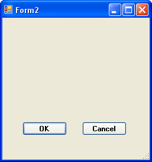

Modal Forms in C# .NET
<< Part of an ongoing lesson - first part is here >>
Return to the code for your button. Instead of using the Show method, change it to this:
secondForm.ShowDialog();
The method we're now using is ShowDialog. This creates what's known as a Modal form. A Modal form is one where you have to deal with it before you can continue. Run your programme to test it out. Click the button and a new form appears. Move it out of the way and try to click the button again. You won't be able to.
Modal forms have a neat trick up their sleeves. Add two buttons to your blank second form. Set the following properties for them:
Name: btnOK
Text: OK
Name: btnCancel
Text: Cancel
Your second form will then look like this:

Double click the OK button and add the following:
this.DialogResult = DialogResult.OK;
After you type the equals sign, the IntelliSense list will appear. Select DialogResult again, then a dot. The IntelliSense list will then show you this:
Select OK. What this does is to record the result of the button click, and set it to OK.
Double click your Cancel button and add the following code:
this.DialogResult = DialogResult.Cancel;
It's the same code, except we've chosen Cancel as the Result. Your coding window for form 2 should look like this:
You can use Form1 to get which of the buttons was clicked on Form2. Was it OK or was it Cancel?
Change the button code on Form1 to this:
The code checks to see if the OK button was clicked. If so, it displays a message. We'll get it to do something else in a moment. But you don't have to do anything with the Cancel button: C# will just unload the form for you.
Try it out. Click your Change Case button on Form1. When your new form appears, click the OK button. You should see the message. Try it again, and click the Cancel button. The form just unloads.